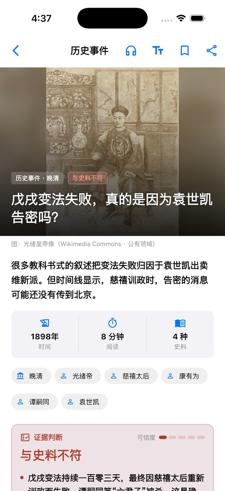
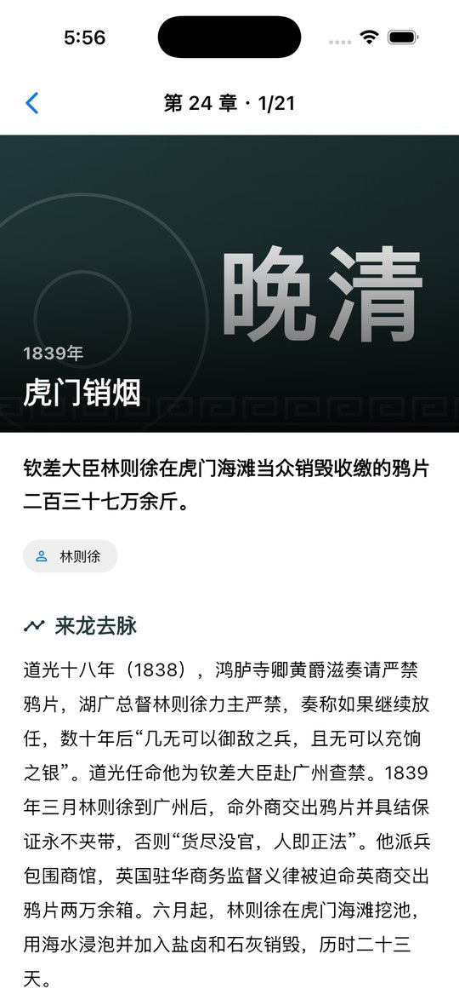
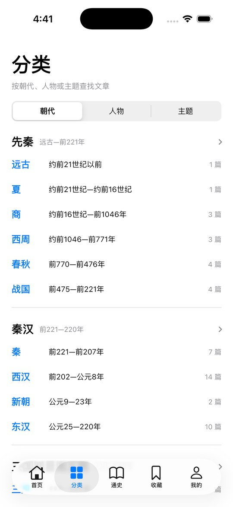

而是一条条可以检验的证据。每篇文章先摆出流行说法，再列证据、引原文，最后给出明确的证据判断。
戊戌变法失败，真的是因为袁世凯告密吗？
很多教科书式的叙述把变法失败归因于袁世凯出卖维新派。但时间线显示，慈禧训政时，告密的消息可能还没有传到北京。
从远古到民国，按朝代、人物、主题或时间线，用你喜欢的方式读历史。
四档证据判断：与史料相符、部分支持、证据不足、与史料不符。文末附参考史料，方便你自己查证。
从夏到民国 25 章，每个事件都有“来龙去脉”和“历史影响”两段解读，并注明史书出处。
8 个时期、30 个朝代，各有简介、关键节点与相关人物；137 位人物按时期排列。
内置神经网络语音，离线可用；支持后台播放与锁屏控制，通勤路上也能“听”历史。
配有博物馆公有领域的文物与古画，字号可调，支持深色模式，阅读舒适。
全部内容内置在 App 中，没有网络也能阅读；无需注册账号，不收集任何个人信息。
遵循 iOS 系统设计，使用系统字体与原生控件。



没有找到答案？欢迎发邮件给我们。
不需要。所有文章、通史内容和朗读语音都内置在 App 中，安装后即可离线使用，也没有任何账号体系。
为了在没有网络时也能用自然人声朗读，App 内置了约 300MB 的离线语音模型。所有内容都在本机运行，不会消耗流量。
请先检查手机是否处于静音模式、媒体音量是否调低，以及是否连接了其他蓝牙设备。也可以在“我的 → 字体与主题 → 语音朗读”中换一种声音试试。标有“自然人声”的声音内置在 App 中；其余为系统语音，可在系统“设置 → 辅助功能 → 朗读内容 → 声音”中下载更高质量的版本。
可以。朗读支持后台播放，锁屏界面和控制中心会显示正在朗读的文章，可以暂停、继续或切换上一段/下一段。来电时会自动暂停，通话结束后自动继续。
这是编辑部根据文中所列史料作出的判断，分为与史料相符、部分支持、证据不足、与史料不符等几档。每篇文章末尾都列出了参考史料，欢迎对照原文自行思考。
非常感谢！请发送邮件至 douglassmaster001@126.com，注明文章标题、有误的内容及您依据的史料。核实后我们会在下一个版本中修正。
不会。收藏、阅读历史和设置只保存在当前设备上。卸载 App 会删除这些数据。
会。新文章与勘误将随 App 版本更新发布，请在 App Store 中保持更新。
使用中遇到问题、发现内容错误，或有任何建议，欢迎随时联系我们。我们通常会在 1–3 个工作日内回复。
✉️ douglassmaster001@126.com